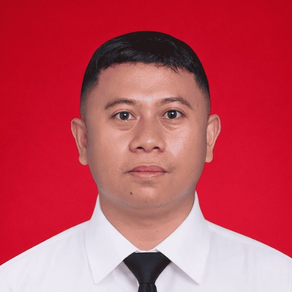

30 model latihan passing futsal berbasis TGFU, lengkap dengan infografis dan denah aktivitas. Belajar dari permainan, bukan dari hafalan.
Lihat semua model ↓ Perangkat guruTidak ada model yang cocok. Coba kata kunci lain.
Fokus keterampilan, format, tekanan lawan, dan instrumen skor tiap model. Geser tabel ke samping.

Mahasiswa Program Doktoral, Sekolah Pascasarjana, Universitas Negeri Jakarta.
Model-model latihan di web ini disusun dari penelitian penulis tentang pembelajaran passing dan kontrol futsal dengan pendekatan Teaching Games for Understanding.